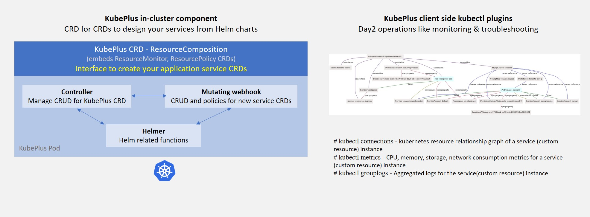
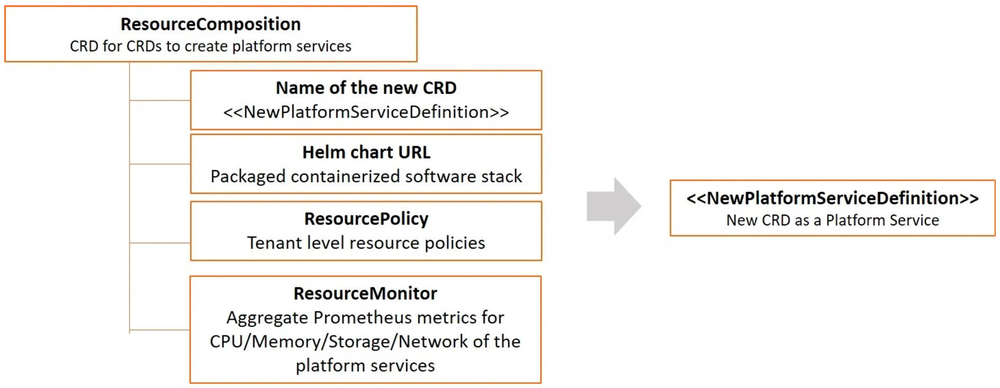
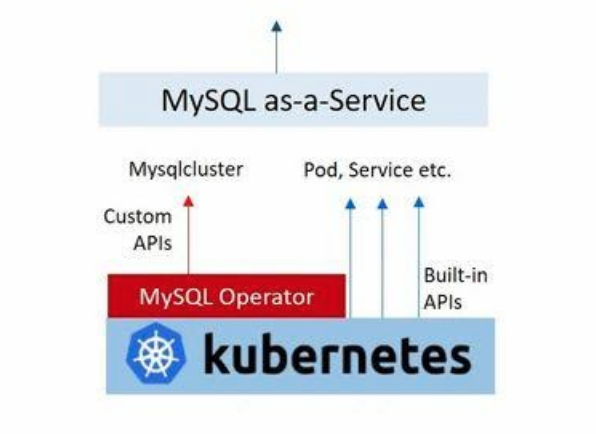

KubePlus Components
KubePlus consists of a in-cluster component and a component that you install outside the cluster. The in-cluster component is deployed as a Kubernetes Pod. It consists of a Kubernetes Controller, a MutatingWebHook, and a container that knows how to deploy Helm charts. KubePlus requires that the Helm charts be defined using Helm 3.0.
{kind=link}
In cluster component - CRD for CRDs to design your services from Helm charts
KubePlus offers a CRD named ResourceComposition to
Create new CRDs (Custom Resource Definition) to publish platform services from Helm charts
Define policies (e.g. CPU/Memory limits, Node selection, etc.) for managing resources of the platform services
Get aggregated CPU/Memory/Storage/Network Prometheus metrics for the platform services
Here is the high-level structure of ResourceComposition CRD:
{kind=link}
To understand this further let us see how a platform team can build a MySQL service for their product team/s to consume. The base Kubernetes cluster has MySQL Operator installed on it (either installed by the Platform team or bundled by the Kubernetes provider).
{kind=link}
The platform workflow requirements are:
Create a PersistentVolume of required type for MySQL instance.
Create Secret objects for MySQL instance and AWS backup.
Setup a policy in such a way that Pods created under this service will have specified Resource Request and Limits.
Get aggregated CPU/Memory metrics for the overall workflow.
Here is a new platform service named MysqlService created using
ResourceComposition.
A new CRD named MysqlService has been created here using ResourceComposition. You provide a platform workflow Helm chart that creates required underlying resources.
When defining the new Kind, make sure that you define the group as platformapi.kubeplus and version as v1alpha1.
Additionally provide any policy and monitoring inputs for the workflow as part of ResourceComposition definition. The Spec Properties of MysqlService come from values.yaml of the Helm chart. Product teams can use this service to get MySQL database for their application and all the required setups will be performed transparently by this service.
apiVersion: workflows.kubeplus/v1alpha1
kind: ResourceComposition
metadata:
name: mysqlservicecrd
spec:
# newResource defines the new CRD to be installed define a workflow.
newResource:
resource:
kind: MysqlService
group: platformapi.kubeplus
version: v1alpha1
plural: mysqlservices
# URL of the Helm chart that contains Kubernetes resources that represent a workflow.
chartURL: https://github.com/cloud-ark/operatorcharts/blob/master/mysqlcluster-stack-0.0.1.tgz?raw=true
chartName: mysqlcluster-stack
# respolicy defines the resource policy to be applied to instances of the specified custom resource.
respolicy:
apiVersion: workflows.kubeplus/v1alpha1
kind: ResourcePolicy
metadata:
name: mysqlservice-policy
spec:
resource:
kind: MysqlService
group: platformapi.kubeplus
version: v1alpha1
policy:
# Add following requests and limits for the first container of all the Pods that are related via
# owner reference relationship to instances of resources specified above.
podconfig:
limits:
cpu: 200m
memory: 4Gi
requests:
cpu: 100m
memory: 2Gi
nodeSelector: values.nodeName
# resmonitor identifies the resource instances that should be monitored for CPU/Memory/Storage.
# All the Pods that are related to the resource instance through either ownerReference relationship, or all the relationships
# (ownerReference, label, annotation, spec properties) are considered in calculating the statistics.
# The generated output is in Prometheus format.
resmonitor:
apiVersion: workflows.kubeplus/v1alpha1
kind: ResourceMonitor
metadata:
name: mysqlservice-monitor
spec:
resource:
kind: MysqlService
group: platformapi.kubeplus
version: v1alpha1
# This attribute indicates that Pods that are reachable through all the relationships should be used
# as part of calculating the monitoring statistics.
monitorRelationships: all
ResourceComposition
ResourceComposition definition consists of the following:
Details of the new API that you want to create (group, version, kind, plural). Currently a unique kind name is required across all the resources present in the cluster. Also, the new API should be registered under the group
platformapi.kubeplusand versionv1alpha1.A publicly accessible Helm chart URL.
A friendly chart name.
ResourcePolicy section (defined under respolicy)
ResourceMonitoring section (defined under resmonitor)
Creating an instance of ResourceComposition registers the specified new API in the cluster. When users create resources of this new API, the Helm chart that was defined as part of the registration of the new API gets deployed as a Helm release. The spec properties of this new API are all the values that are defined in values.yaml of the registered Helm chart.
ResourcePolicy
ResourcePolicy definition consists of specification of Pod-level mutations which will be applied to the Pods that are created when the Helm chart corresponding to the new API is deployed. Note that the Helm chart may or may not define Pods directly. There might be higher-level resources defined in the chart, such as Deployments, StatefulSets, or custom resources such as MysqlCluster, which internally create Pods. KubePlus is able to discover all the Pods for a particular Helm release and perform the mutations by modifying such Pods’ spec. The mutations are done before the Pods are actually created to ensure that there are no Pod restarts.
Currently two mutations are supported as part of podconfig spec attribute:
requests and limits: These fields are used to define cpu and memory resource request and limits for containers defined in a Pod. If a Pod is made of several containers currently only first container’s spec is mutated. Also, currently initContainers are not supported.
nodeSelector: This field is used to specify Node name on which a Pod needs to run. KubePlus updates the Pod’s spec to include
nodeSelectorattribute based on the provided value.
The values for above fields can be statically defined, or they can be customized per resource instance of the new API. If it is the latter then the value needs to be specified to be input from the underlying values.yaml. In the above example, requests and limits are statically defined, whereas nodeSelector is defined to be different per resource instance of the new API. Hence its value is specified to be ingested from the nodeName field from the underlying values.yaml. Note that if nodeName field is not defined in values.yaml then this mutation will be a noop.
ResourceMonitor
ResourcMonitor defines the monitoring requirements. The monitoring metrics that are collected consist of CPU, Memory, Storage and Network for all the Pods that are related to a resource instance. The monitorRelationships attribute defines what all relationships to track to build the monitoring metrics. The supported values for it are all and owner. In Kubernetes resources are related to one another through four different relationships - ownerReferences, labels, spec properties, and annotations.
Attribute value all indicates that all these relationships be used to discover the Pods. Attribute value owner indicates that only ownerReference relationship be used to discover the Pods. When ResourceMonitor is used as part of ResourceComposition definition like above, monitorRelationships should be set to all so that we use all the Pods that are created as part of the underlying Helm chart when calculating the metrics.
Collected metrics are output in Prometheus format.
The resource section in both ResourcePolicy and ResourceMonitor specifies the GVK (group, version, kind) of the resource for which policy needs to be enforced or that needs to be monitored. Set these to be the same as resource that is defined as part of ResourceComposition.newResource.resource section.
In the future we plan to support creation of ResourcePolicy and ResourceMonitor separately from ResourceComposition for general purpose policy and monitoring. At that time the resource section can contain the coordinates (GVK) for any resource present in a cluster.
Client side Kubectl plugins for monitoring and troubleshooting
KubePlus kubectl plugins enable users to discover, monitor and troubleshoot service instances. The primary plugin is: `kubectl connections`. It provides information about relationships of a Kubernetes resource instance (custom or built-in) with other resources (custom or built-in) via owner references, labels, annotations, and spec properties. KubePlus constructs Kubernetes Resource relationship graphs at runtime providing it the ability to build resource topologies and offer fine grained visibility and control over the application service.
Here is the resource relationship graph for MysqlSevice created above discovered using the kubectl connections command.
kubectl connections MysqlService mysql1
{kind=link}
Check the available KubePlus kubectl plugins by running: kubectl kubeplus commands
$ kubectl kubeplus commands
NAME
kubectl kubeplus commands
SYNOPSIS
kubectl man
kubectl connections
kubectl metrics
kubectl applogs
kubectl retrieve kubeconfig provider
kubectl retrieve kubeconfig consumer
kubectl grantpermission consumer
DESCRIPTION
KubePlus provides a suite of kubectl plugins to discover, monitor and troubleshoot Kubernetes applications.
The discovery plugins (kubectl man and kubectl connections) help with discovering the static and runtime
information about an application.
- kubectl man provides the ability to discover man page like information about Kubernetes Custom Resources.
- kubectl connections provides the ability to discover Kubernetes resources that are related to one another
through one of the following relationships - ownerReferences, label, annotations, spec properties.
The monitoring and troubleshooting plugins (kubectl metrics and kubectl applogs) enable collecting application metrics and logs.
- kubectl metrics collects CPU, Memory, Storage, and Network metrics for an application. These are available in Prometheus format.
- kubectl applogs collects logs for all the containers of all the Pods in an application.
The kubeconfig files that are meant to be used by SaaS provider and SaaS consumers are available through:
- kubectl retrieve kubeconfig provider
- kubectl retrieve kubeconfig consumer
These kubeconfig files are provided with limited RBAC permissions appropriate for the persona.
- kubectl grantpermission consumer
This plugin enables provider to grant permission for the created service to the consumer. A consumer will be able to create service instances only after that.
In order to use these plugins you need to add KubePlus folder to your PATH variable.
$ export KUBEPLUS_HOME=<Full path where kubeplus is cloned>
$ export PATH=$KUBEPLUS_HOME/plugins:$PATH
KubePlus cluster-side component bundles these plugins as part of the Helmer container.
Resource relationship graphs
For resource policy enforcement and monitoring, KubePlus needs to discover resource topologies. It does that by discovering Custom Resource relationship graphs. In order to do this, KubePlus depends on the following annotations:
resource/composition
resource/label-relationship
resource/specproperty-relationship
resource/annotation-relationship
These annotations need to be defined on the Custom Resource Definition (CRD) YAMLs of Operators in order to make Custom Resources discoverable and usable by Platform engineers.
The ‘composition’ annotation is used to specify the list of Kubernetes’s built-in resources that are created as part of instantiating a Custom Resource instance. The three relationship annotations are used to declare label, spec-property, and annotation based relationships that instances of a Custom Resource can have with other Kubernetes resources.
KubePlus adds the annotation-relationship annotation to the CRD of the new API that is registered via ResourceComposition. For every resource that is defined in the underlying Helm chart, KubePlus adds a created-by: kubeplus annotation. So in the annotation-relationship annotation on the new CRD it adds this name-value pair as the value of this relationship.
CRD annotations on community Operators
Here are examples of using above annotations on community Operators.
Moodle Operator
Moodle Operator defines and manages Moodle CRD.
Annotations on Moodle Custom Resource Definition (CRD) are shown below:
apiVersion: apiextensions.k8s.io/v1beta1
kind: CustomResourceDefinition
metadata:
name: moodles.moodlecontroller.kubeplus
annotations:
resource/composition: Deployment, Service, PersistentVolume, PersistentVolumeClaim, Secret, Ingress
resource/specproperty-relationship: "on:INSTANCE.spec.mySQLServiceName, value:Service.spec.metadata.name"
spec:
group: moodlecontroller.kubeplus
version: v1
names:
kind: Moodle
plural: moodles
scope: Namespaced
The composition annotation declares the set of Kubernetes resources that are created by the Moodle Operator when instantiating a Moodle Custom Resource instance. The specproperty relationship defines that an instance of Moodle Custom Resource is connected through it’s mySQLServiceName spec attribute to an instance of a Service resource through that resource’s name (metadata.name). Below is an example of a Kubernetes platform workflow in which a Moodle Custom Resource instance is bound to a MysqlCluster Custom Resource instance through the Service resource that is created by the MysqlCluster Operator. The specproperty relationship helps discover this relationship as seen below:
(venv) Devs-MacBook:kubeplus devdatta$ kubectl connections Moodle moodle1 namespace1
Level:0 kind:Moodle name:moodle1 Owner:/
Level:1 kind:Service name:cluster1-mysql-master Owner:MysqlCluster/cluster1
Level:2 kind:Pod name:cluster1-mysql-0 Owner:MysqlCluster/cluster1
Level:3 kind:Service name:cluster1-mysql-nodes Owner:MysqlCluster/cluster1
Level:3 kind:Service name:cluster1-mysql Owner:MysqlCluster/cluster1
Level:2 kind:Pod name:moodle1-5847c6b69c-mtwg8 Owner:Moodle/moodle1
Level:3 kind:Service name:moodle1 Owner:Moodle/moodle1
Multus Operator
The Multus Operator defines and manages NetworkAttachmentDefinition CRD.
resource/annotation-relationship: on:Pod, key:k8s.v1.cni.cncf.io/networks, value:INSTANCE.metadata.name
The annotation-relationship annotation is defined on the NetworkAttachmentDefinition CRD. It defines that the relationship between a Pod and an instance of NetworkAttachmentDefinition Custom Resource instance is through the k8s.v1.cni.cncf.io/networks annotation. This annotation needs to be defined on a Pod and the value of the annotation is the name of a NetworkAttachmentDefinition Custom resource instance.
Stash Operator
The Stash Operator defines and manages Restic CRD.
resource/specproperty-relationship: "on:INSTANCE.spec.volumeMounts, value:Deployment.spec.containers.volumemounts.mountpath"
resource/label-relationship: "on:Deployment, value:INSTANCE.spec.selector"
Above annotations are defined on the Restic CRD. Restic Custom Resource needs two things as input. First, the mount path of the Volume that needs to be backed up. Second, the Deployment in which the Volume is mounted needs to be given some label and that label needs to be specified in the Restic Custom Resource’s selector.
Annotated Operators
We maintain a listing of annotated community Operators. Check it out here.
We will be happy to include your annotated Operator in this list. Just submit a PR to KubePlus repo with details about the CRDs that your Operator manages and all the relationships that it depends on when handling its custom resource instances.